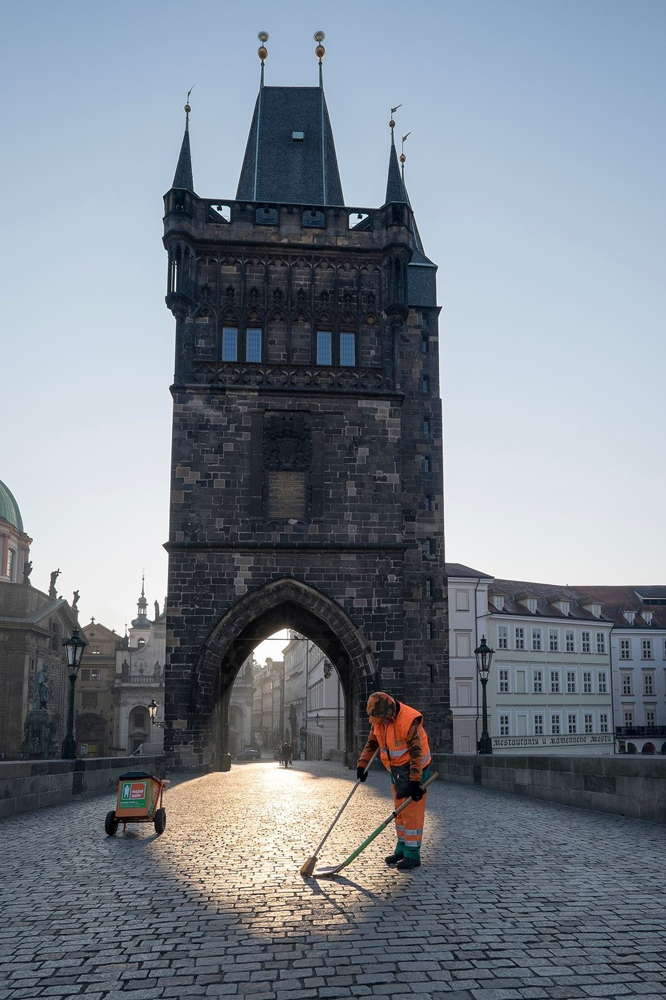

Vít Fikejzl starý nadějný fotograf

Galerie
Vyberte kategorii a zobrazí se fotky.
V této kategorii zatím nejsou žádné fotky.

Jindřichův Hradec
O mně
Vít Fikejzl starý nadějný fotograf
Latinský původ mého jména vitus značí živoucí, radostný, veselý, což předznamenává, že fotím zejména pro radost. Už mi bylo šedesát, proto jsem se nazval starým nadějným fotografem.
Svět je barevný, a proto ho fotím barevně. Černá a bílá jsou také barvy, proto fotím i černobíle. Občas zkusím něco mezi.
Nerad sedím na mezi, raději jsem v horách. Jsem však schopen vyfotit i krajinu placatou.
Cestu do práce a z práce si zpříjemňuji focením Prahy. Zaměstnavatel mi to svým sídlem v centru ulehčuje. Mohu měnit trasy podle libosti hvězdicovitým způsobem.
Jednou jsem vyhrál kategorii Ostatní ve hvězdářské soutěži, ač na fotce žádné hvězdy nebyly. Z focení Prahy jsem si odnesl pár diplomů, mám je v šuplíku.
Mimo Prahu jezdím rád na kole. Ti za mnou si dávají větší odstup, protože vědí, že mohu kdykoliv prudce zabrzdit a začít fotit.
Krajinu občas doplním nějakou slečnou, které bývá v létě vedro, a tak mi nezbývá než ji vyfotit, jak je.
Ve své tvorbě střídám minimalistický a maximalistický přístup. Přijde mi líto, že můj foťák má milióny pixelů, a tak se minimálně několikrát ročně vynasnažím, aby maximální množství pixelů mohlo zazářit různými barvami.